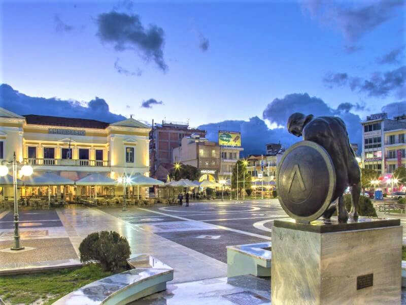

Sparti

3 Fun Facts About Sparti
- The home of Leonidas: Ancient Sparta was the homeland of King Leonidas, famous for leading Greek defenders at the Battle of Thermopylae.
- A modern city with an ancient name: Although ancient Sparta is thousands of years old, the modern city was founded in 1834.
- Mountains on both sides: Sparta sits near two beautiful mountain ranges: Taygetos to the west and Parnon to the east.
Fact source: Visit Greece